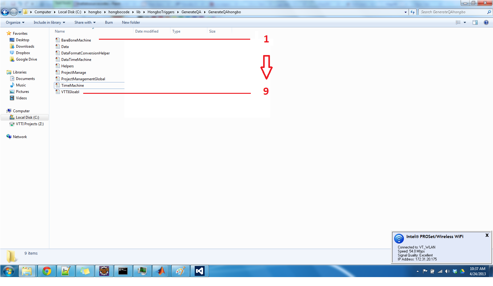

DATA KUNGFU MATLAB CODES OUTLINE

Matlab Root classes
First of all, why we need root classes? It is a simple yet hard to answer question. If you choose to use object oriented programming method, we can not avoid having root class.
Even there is only one class, it is still a root class. So as an object oriented programmer, it is almost infeasible to avoid the root classes.
But this does not mean we have to pay a lot of attention to it? The answer is that we have to pay quite amount of attention to it. For designing object oriented programming, we have to pay a great deal of attention
to root classes. It is not necessarily the first step you have to take when designing your program, but it is really an most important step.
So, in the datakungfu matlab codes, there are several root classes, respectively are.
- Helpers --> A root class used to provide helper functions to other classes. Helper is a good approach, simple yet effective. You do not have to design complex classes structures
and simply use helper classes to achieve your design goal.
- Data ---> This root class can be used to extend some functions related to data transfer, analysis, iterations etc heavy work. For the time being, it has not been really implemented
However, it will be implemented in the near future for doing some quite heavy data analysis work.
- TimeMachine --> Timemachine as a root class with the idea that we can fetch some data from remote database and bring it to local or cluster nodes, then our life will become much easier.
When retriving data from remote database, it is quite cubersome to wait for data and move the data around.
So instead of just waitting for data, we just go ahead to move the necessary data to our local computational environment beforehand.
We can not move all data to local. But we can move the data we need and delete them when appropriate. By doing so, we can really focus on
how to make our program logic more powerful. So with timemachine, you can manipulate quite smoothly in both backward and forward direction.
TimeMachine is the root class, It is the father of barebonemachine and the grandfather of datatimemachine.
If you look at the codes of Timemachine, you can find there are not really much over there. And it is supposed to be so, you do not want to put
a lot of codes into root class, like you do not want your 80 years old grand father do a lot of heavy work, What they usually do is to give
their children some guidelines and directions.
- ProjectManagementGlobal
This root class provides some project management functions to the projecct. For example, you want to set your project as the default starting location
when matlab starts. Or you want to put your user name and password over there. Or you may want to put some other matlab utilities functions over there.
For example, the data copies and mat files management copies, deletion work... you name them!
BareboneMachine class. It is the parent class of DataTimemachine class. It is also the child class of TimeMacine class, which is the root class.
As the parent class, bareonemachine does not do very heavy lifting work. It is mainly
used to extract the data from remote database. For example, if you want to extract 1000 - 10,000 - 1 M sqls equaled data from DB2 database. You may can do the following:
TM = DataTimeMachine(user, password, localdbpath);
Comment: connect to the database. Where username is your DB2 user name. Password is your DB2 password. localdbpath
is the database path and file name, which you need to specify. It is better to put the local database somewhere in your local hard driver. It can increase your database reading
and writting speed.
TM = TM.prepare_sql_for_bareboone(sql);
Comment: insert sql related data into local database. NOTE: you can put the sql in a loop. for example, there are thousands of sqls. You just put this line of code in the loops. Then, it will
grab data from DB2 database. What you get is essentially all your data for you to be ready to run your program.
The idea is that it can separate your programming logic part from data grabbing part. Before you start programming your logic, you may know what you are going to do with the data.
Then what you simply can do is to run this line of code to grab your data first. While your data is being grabbed. You can program your logic at the same time.
This means you do not have to wait for the data to be ready while you are programming, which could be a very painfully slow process.
TM = TM.insert_sql_into_barebone(1);
Comment: After you have grabbed your sql related data within a big loop. Now it is time to insert your data into the database. The reason to seperate the sql data prepare from sql data insert
is because if we just put them together, it could overload the local database, since there is constant insertion to the local database, which can cause memory overflow.
Or it can cause local database can not handle such high insertion rate. More research is needed in terms of this topic!
DataTimeMachine class
As an inherited class from the Barebonemachine class. DataTimeMachine class does most of heavy lifting work. It means that this class is the main interface which exposes most of DataKungfu methods
exposed to matlab developers.
There are quite bit of codes in this class. First of all, the constructor of the class should be understood
function TM = DataTimeMachine(user,password, localdbpath) %constructors
% Call super class to import packages
TM = TM@BareBoneMachine(); ---> call the super class constructor
if nargin< 3 || nargin> 3 % must provide 3 parameters ---> give the correct constructing parameters
disp('Please provide USER, PASSWORD, and Local Database Path (with name)!!');
disp('Retry please!');
else
%import methods from the JAVA jar packages
TM.xmlmethodshandle = org.vtti.data.XmlData; --> initiate the java package and return the handle to the java class
TM.datatimemachine = org.vtti.timemachine.DatabaseTimeMachine; --> initiate the java package and return the handle to the java class
TM.barebonemachine = org.vtti.timemachine.BareBoneMachine; --> initiate the java package and return the handle to the java class
%methodsview org.vtti.timemachine.BareBoneMachine;
TM.user = user; --> initiate the user name
TM.password = password; --> initiate the password
TM.localdbpath = localdbpath; --> initiate the local database path name
TM = TM.start(); % start the Time Machine --> Start the data time machine
end
end
function TM = start(TM)
%Can view the functions that are in the JAVA jar packages
%%%methodsview org.vtti.timemachine.DatabaseTimeMachine;
%prepare for the local db
TM.localdb = TM.datatimemachine.preparelocaldb(TM.localdbpath); --> First prepare for the local database path
%connect to the remote DB2 database
TM.conn = TM.datatimemachine.connect(TM.user, TM.password); --> Connect to the local database
end
function close(TM) % close both local and remote databases
TM.datatimemachine.closeremoteldb(TM.conn); ---> Close the remote DB2 database
TM.datatimemachine.closelocaldb(TM.localdb); ---> Close the local database
end
There are also several functions, and most of them are the functions of reading data from remote database and storing the data to local database.
Two notable functions are
% get data time machine handle, which is returned from jar file
function datatimemachine = get_data_time_machine(TM) % get the time machine handle
datatimemachine = TM.datatimemachine; --> get the time machine handle
end
% get the xml engine handle, which is returned from jar file
function xmlmethodshandle = get_xml_engine(TM) % get xml file processing handle
xmlmethodshandle = TM.xmlmethodshandle; --> get the XML handle
end
These two functions are used to get the XML data processing handle. This handle is returned from JAVA codes.
So when you want to use XML functions, you just simply do this.
xml_java_array= TM.get_xml_engine().getnodevalues(xmlfile,inputstr, 'snippet'); % call java jar genodevalues function to parse XML file
So this line of code is meant this. You call get_xml_engine() function and get the XML processing handle. And then using the handle to call the
specific XML processing function [getnodevalues], which is in the java data package, XMLData class.
Helpers and DataFormatConversionHelper
classdef DataFormatConversionHelper
This is the dataformatconversionhelpers code. In this code, it is shown that
(1) a simple class based matlab coding method, where helpers is the parent class of the DataFormatConversionHelper class
(2) how to define a simple helper class and method
The function of db2dataconvert(datatypes, dataentry, column) is used to transform the JAVA data types to matlab data types.
If it is short, integer, long java formats, then we need to transfer it to the integer type of Matlab. The double format of the java type will be transfered to
double type of matlab
If it is timestamp format or string format of java, then they will be transfered to char format of matlab
For the other java types, it will also be transferred to char type of matlab type.
NOTE: A caution should be made for how to translate these data types. In case, there are any special database types, a special transform might be needed,
For simplicity, we transfer all other types except the commonly used ones to matlab string type. Though this method might work for most of cases, this might lead to some problems for particular applications in the real practice!